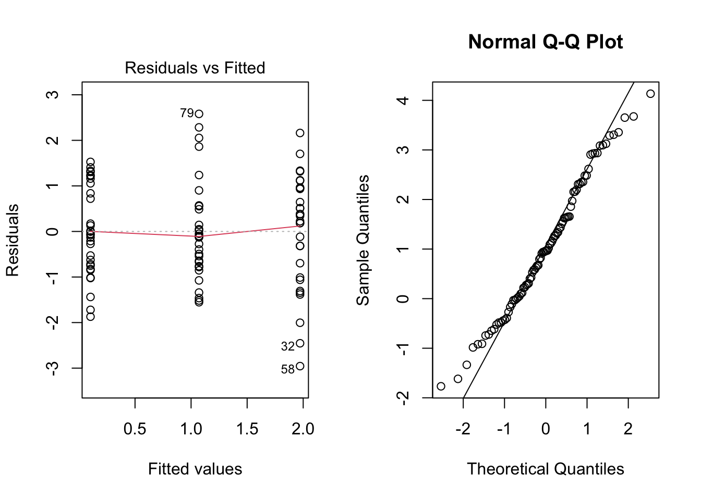

| Nap_Duration | Caffeine |
|---|---|
| 0 min | Water |
| 0 min | Tea |
| 0 min | Coffee |
| 30 min | Water |
| 30 min | Tea |
| 30 min | Coffee |
| 60 min | Water |
| 60 min | Tea |
| 60 min | Coffee |
A Study on Attention Span: Testing the Effects of Caffeine and Naps
Abstract
Caffeine consumption and naps are increasingly common among college students. This study examines whether caffeine and naps improve attention span. Using a Two-Way Randomized Block Design and two-way ANOVA, we analyzed a sample of islanders. Our results indicate that Nap Interval significantly affects attention span, while caffeine consumption and gender do not.
Introduction
Caffeine is a stimulant found in coffee, tea, and other sources, known to increase alertness. Studies suggest that:
- Caffeine doses of 75 mg or more impact attention (EFSA).
- Short naps of up to 30 minutes can enhance alertness (CDC).
- “Caffeine naps” (caffeine before napping) may improve focus (Centofanti et al.).
This study investigates the combined effects of caffeine and naps using water, coffee, and tea as caffeine sources and 0, 30, and 60-minute naps as treatments.
Experiment Design & Methods
Participants
- 198 participants (99 males, 99 females) from “The Islands” virtual program.
- Randomly assigned into equal-sized treatment groups.
Study Design
- Blocking Variable: Gender
- Factors: Nap Duration (0, 30, 60 minutes), Caffeine Type (Water, Tea, Coffee)
- Response Variable: Attention Score (difference before and after treatment)
Procedure
- Recruit 198 participants, ensuring equal gender distribution.
- Randomly assign them to the 9 treatment groups.
- Conduct a baseline attention test.
- Administer assigned nap durations and caffeine treatments.
- Wait 15 minutes after treatment.
- Conduct a post-treatment attention test.
- Calculate the difference in attention scores.
Results
Box Plots
The boxplots below show the distribution of attention score differences by Nap Interval and Caffeine Type:
ANOVA Results
| Factor | p_value |
|---|---|
| Gender | 0.7586 |
| Nap Interval | 0.0186 |
| Caffeine | 0.6757 |
| Nap:Caffeine Interaction | 0.1103 |
- Nap Interval (p = 0.0186) was the only significant factor.
- Caffeine and Gender had no significant effect.
- No interaction effect was detected between Caffeine and Nap Interval.
Tukey HSD Test for Nap Duration
| Comparison | Difference | p_value |
|---|---|---|
| 30 min vs 0 min | 2.23 | 0.017 |
| 60 min vs 0 min | 1.59 | 0.120 |
| 60 min vs 30 min | -0.64 | 0.709 |
- 30-minute naps significantly improved attention compared to no naps (p = 0.017).
- 60-minute naps did not significantly differ from 0 or 30-minute naps.
Residual Diagnostics

- Residual plots confirm model assumptions of normality and homogeneity of variance.
Discussion
- Napping was a significant factor, while caffeine had no measurable impact.
- The study could be improved by adding a placebo group (e.g., decaf coffee).
- Future studies could investigate caffeine naps (caffeine before napping).
- Effects of energy drinks with sugar should be explored.
Conclusion
Taking a 30-minute nap significantly improves attention, whereas caffeine does not show measurable effects. However, caffeine is not harmful in moderate doses.
References
- CDC: Caffeine and Long Work Hours
- Centofanti et al. (2020). Impact of a Caffeine-Nap on Alertness.
- Cousins JN et al. (2019). Memory Benefits of Daytime Naps.
- EFSA Panel on Dietetic Products (2011). Caffeine and Attention.